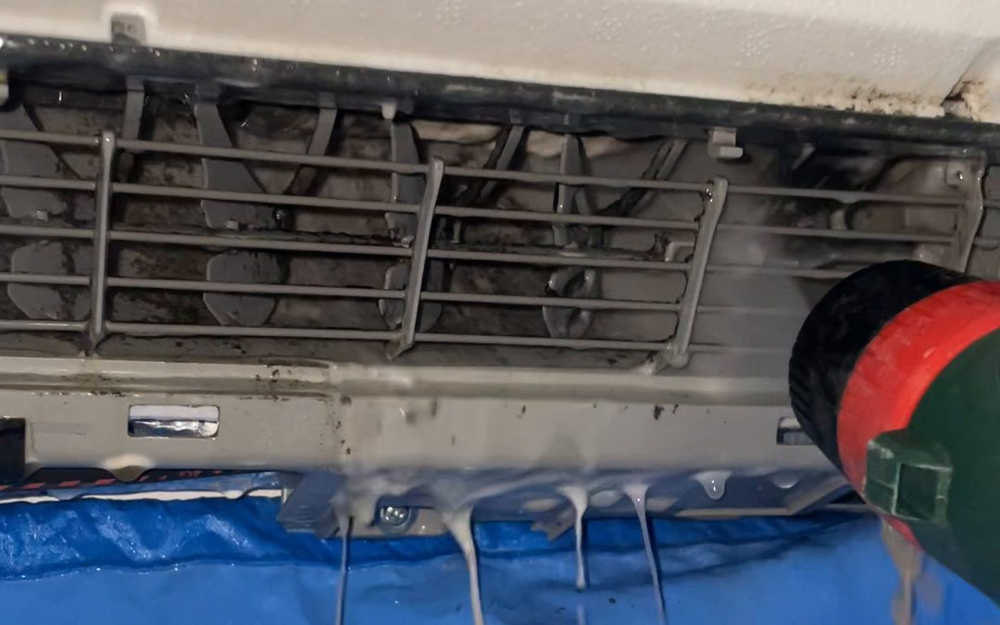

Pourquoi une clim produit de l'eau
En mode froid, la climatisation refroidit l'air et en retire l'humidité. Cette humidité se condense sur la batterie de l'unité intérieure, tombe dans un bac, puis part dehors ou dans une évacuation par un petit tuyau. Quand l'eau coule dans la pièce, c'est que ce circuit ne fonctionne plus.
Les 5 causes les plus fréquentes
- L'évacuation des condensats est bouchée : poussière, dépôt gras, algues ou insectes dans le tuyau. C'est la cause numéro un.
- Le bac à condensats est plein ou encrassé : la saleté qui s'y accumule empêche l'eau de s'écouler.
- Les filtres sont très encrassés : l'air passe mal, la batterie devient trop froide et givre. Quand le givre fond, il déborde du bac.
- Le tuyau d'évacuation n'a pas assez de pente, ou il est écrasé ou remonte : l'eau stagne et revient. C'est souvent le signe d'une pose mal faite.
- La pompe de relevage est en panne, quand l'eau doit remonter avant de partir : on l'entend parfois tourner sans rien évacuer.
Ce que vous pouvez vérifier vous-même
- Coupez la climatisation et protégez le sol ou le mur sous l'unité.
- Sortez les filtres et rincez-les à l'eau tiède s'ils sont gris.
- Dehors, regardez si de l'eau sort bien du tuyau d'évacuation quand la clim tourne.
- Ne démontez pas l'unité et n'utilisez pas d'objet pointu dans la batterie.
Et le groupe extérieur qui coule ?
En hiver, en mode chauffage, il est normal que le groupe extérieur évacue de l'eau : il dégivre régulièrement. Ce n'est pas une fuite. En revanche, une flaque huileuse ou une clim qui ne refroidit plus du tout doit faire penser à une fuite de fluide, à faire vérifier par un professionnel.
Quand appeler un climaticien
Si l'eau coule encore après le nettoyage des filtres, il faut nettoyer le bac et déboucher l'évacuation, ou reprendre la pente du tuyau. Thermaz intervient sur toutes les marques à Salon-de-Provence et alentours : appelez le 06 51 10 64 35 ou décrivez la panne dans le formulaire de dépannage. Un entretien annuel de la climatisation évite la plupart de ces fuites.